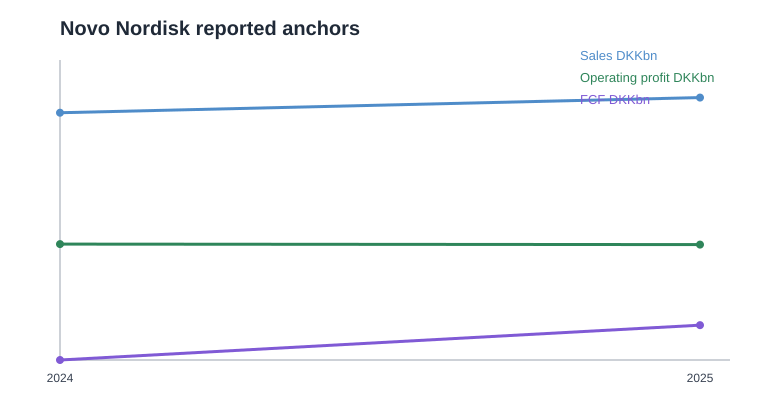
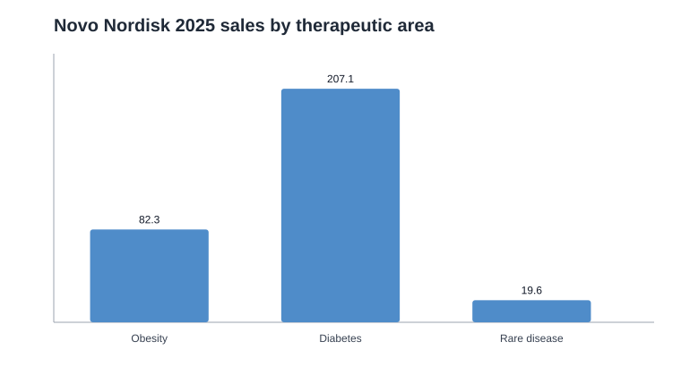
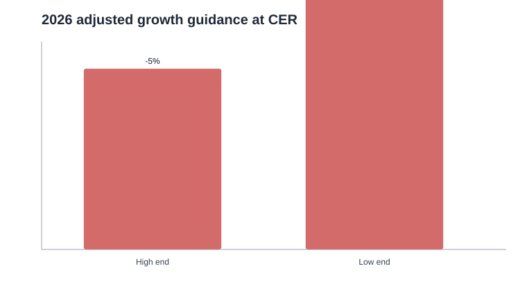
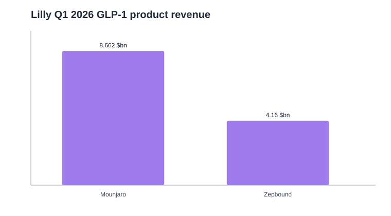

Novo Nordisk / NVO — Deep Dive pre-valoración v0.1
1. Resumen ejecutivo
Novo Nordisk sigue siendo uno de los activos de mayor calidad en pharma por escala, marca, know-how clínico y posición en GLP-1. Pero el caso ya no puede analizarse como “GLP-1 winner = comprar”. El TAM de obesidad/diabetes sigue siendo enorme; la duda crítica es cuánto valor económico retiene Novo ante precio neto más bajo, competencia de Lilly, cobertura pública y mayor intensidad de inversión.
- Bull: liderazgo GLP-1 global, oral Wegovy expande mercado, pipeline prolonga duración y capex normaliza.
- Bear: US pricing/share se deteriora, Lilly gana profit pool, oral canibaliza y márgenes estructuralmente bajan.
- Base razonable: 2026 es reset; recuperación parcial 2027+, pero con múltiplo más disciplinado que en etapa de scarcity premium.
2. Qué hace la compañía
Novo Nordisk es una farmacéutica danesa centrada en diabetes, obesidad y rare diseases. Su motor económico principal son terapias GLP-1: Ozempic en diabetes, Wegovy en obesidad, Rybelsus como semaglutide oral en diabetes y Wegovy pill como nueva vía oral para obesidad en US.
US es el mercado clave por precio, rebates, cobertura y mix. International Operations aporta diversificación y volumen, pero incluye presión por exclusividad, precio y reembolso.
3. Hechos financieros clave 2025
| Métrica 2025 | Valor | Comentario |
|---|---|---|
| Ventas | DKK 309.1bn | +6% reportado / +10% CER |
| Operating profit | DKK 127.7bn | -1% reportado / +6% CER |
| Net profit | DKK 102.4bn | +1% |
| EPS diluido | DKK 23.03 | +2% |
| FCF | DKK 28.3bn | mejora vs 2024, aún presionado por capex |
| PPE capex | DKK 60.1bn | capacity expansion |

4. Segmentos y motores económicos
| Área | Ventas 2025 | Crecimiento | Lectura |
|---|---|---|---|
| Obesity care | DKK 82.3bn | +26% reportado / +31% CER | motor de crecimiento; mercado GLP-1 obesity sigue expandiéndose |
| Diabetes care | DKK 207.1bn | flat reportado / +4% CER | más maduro; presión de share |
| Rare disease | DKK 19.6bn | +5% reportado / +9% CER | diversificador, no mueve tesis principal |

Obesity care crece rápido, pero Diabetes muestra señales competitivas: la cuota global de valor en diabetes cayó 3.6pp hasta 30.1%. Novo mantiene 59.6% de branded volume share en GLP-1 obesity global, pero la valoración depende del profit pool, no solo de volumen.
5. 2026: reset de guía

Q1 2026, según fuente secundaria CNBC y pendiente de extracción primaria completa, habría mejorado la guía a -4% a -12% CER por mejor expectativa GLP-1, con Wegovy pill por encima de consenso. Es positivo, pero no elimina el problema de fondo: precio neto y share.
6. Oral Wegovy
Oral semaglutide 25mg fue aprobado en US como Wegovy pill el 22-dic-2025 y lanzado el 5-ene-2026. La compañía indicó aproximadamente 50k weekly prescriptions al 23-ene-2026. La aprobación se apoya en OASIS 4: ~17% pérdida de peso si todos permanecen en tratamiento y ~14% bajo treatment policy estimand.
La oportunidad es real porque puede ampliar el mercado a pacientes que rechazan injectables. Pero el modelo debe haircutearlo hasta entender cuánto es incremental, cuánto canibaliza, qué precio neto tiene y cómo compite contra el oral de Lilly.
7. Margins / FCF quality
| Métrica | 2024 | 2025 | Lectura |
|---|---|---|---|
| Gross margin | 84.7% | 81.0% | presión por Catalent, restructuring, capacity y FX |
| Operating profit | DKK 128.3bn | DKK 127.7bn | plano/baja reportado pese a ventas +6% |
| FCF | DKK -14.7bn | DKK 28.3bn | mejora, pero capex sigue alto |
| PPE capex | DKK 47.2bn | DKK 60.1bn | expansión de capacidad |
El análisis debe separar presión one-off de restructuring/Catalent de erosión estructural por precio y competencia. Si es temporal, el reset puede ser oportunidad; si es estructural, el múltiplo justo baja.
8. Novo vs Lilly
Lilly es el peer económico central. Según release Q1 2026 de Lilly, revenue subió 56% a $19.8bn, impulsado por volumen, parcialmente compensado por precios realizados más bajos. Mounjaro generó $8.662bn (+125%) y Zepbound $4.160bn (+80%). Lilly además elevó guía 2026 a $82-85bn de revenue y aprobó Foundayo/orforglipron como GLP-1 oral para obesidad.

Esto confirma que el problema de Novo no es demanda GLP-1, sino competencia por share, precio neto y formato oral/injectable.
9. Escenarios pre-modelo
| Escenario | Supuestos clave | Implicación |
|---|---|---|
| Bear | pricing US sigue cayendo, Lilly gana share, oral canibaliza, margen no normaliza | menor múltiplo y menor EPS/FCF normalizado |
| Base | 2026 reset, recuperación parcial 2027+, oral parcialmente incremental | tesis posible si valuation descuenta reset |
| Bull | oral expande TAM, share defendible, pipeline refuerza duración, capex peak | rerating potencial y FCF mejora |
10. Checklist para valoración
- Revenue por Diabetes / Obesity / Rare Disease.
- Ozempic, Wegovy injectable, Wegovy pill, Rybelsus cuando sea posible.
- US vs International growth.
- Net price / gross-to-net assumptions.
- Share pressure vs Lilly.
- Gross margin normalizada.
- R&D + S&D como % ventas.
- Capex 2026-2030 y D&A lag.
- FCF conversion y capital return.
- Pipeline probability adjustment.
11. Conclusión pre-valoración
Recomiendo pasar a modelo con tres bloques: bear/base/bull de pricing/share, normalización de margen/FCF y valor pipeline. Mantendría la task abierta hasta completar tabla histórica más fina y extracción primaria completa Q1 2026 si se quiere una versión v1.0 final.
12. Fuentes
- Novo Nordisk Annual Report 2025 — Financial performance: annualreport.novonordisk.com
- Novo Nordisk Company Announcement No. 4 / 2026: novonordisk.com
- Novo Nordisk Q1 2026 Investor Presentation: PDF
- Wegovy pill FDA approval / PRNewswire: PRNewswire
- Eli Lilly Q1 2026 release / PRNewswire: PRNewswire
- CNBC Q1 2026 Novo context, secondary: CNBC
Limitación: la extracción primaria Q1 2026 de Novo desde PDF no pudo completarse con parser textual local; cifras Q1 específicas se tratan como secundarias salvo las confirmadas por fuentes oficiales ya citadas.